Infosec Institute - n00bs CTF Labs Writeup
_____ _____ _ _____ ___________ _ _
| _ || _ | | / __ \_ _| ___| | | | |
_ __ | |/' || |/' | |__ ___ | / \/ | | | |_ | | __ _| |__ ___
| '_ \| /| || /| | '_ \/ __| | | | | | _| | | / _` | '_ \/ __|
| | | \ |_/ /\ |_/ / |_) \__ \ | \__/\ | | | | | |___| (_| | |_) \__ \
|_| |_|\___/ \___/|_.__/|___/ \____/ \_/ \_| \_____/\__,_|_.__/|___/
by Infosec Institute
I tried the n00bs CTF Labs, it’s still online on http://ctf.infosecinstitute.com/index.php.
Description:
woot! $1200 bounty available.
The Infosec Instite n00bs CTF Labs is a web application that hosts 15 mini Capture the Flag (CTF) challenges intended for beginners. The levels can be navigated in the navbar. There is no scoring or leaderboard, but to claim the bounty for each level (bounties range from $10 to $150) you’ll need to write up the solution and any other helpful instructions or information and post that in a public place (blog, forum, etc.). If you don’t have a place to post it…ask a friend!
Why? This is a learning tool and we want to promote using it as a learning tool in other places where new students of information security might be reading. After you have written up your explanation, send the link to ryan.fahey@infosecinstitute.com.
We will judge the most helpful posts, choose a winner, and post them on the InfoSec Institute Resources site. You can win up to 3 flags - we will award your highest paying 3 if you capture more. No current or former InfoSec Institute employees may enter
Happy hacking!
Level 01
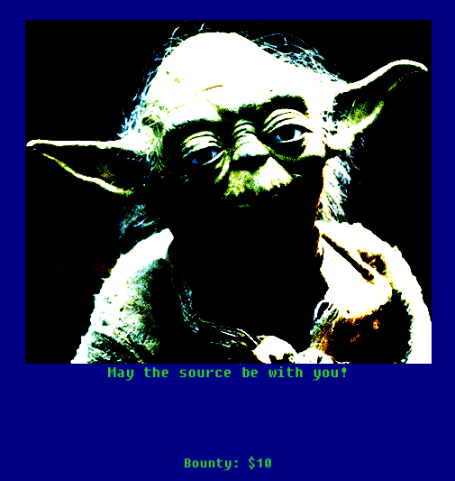
The hint phrase is talking about source code, let’s go check it!
In Firefox, you can just right click somewhere on the web page and choose View Page Source or use the keyboard shortcut CTRL+U. The beginning of the code looks like this:
<!-- infosec_flagis_welcome -->
<!DOCTYPE html>
<html lang="en">
<head>
<meta charset="utf-8">
<meta name="viewport" content="width=device-width, initial-scale=1.0">
<meta name="description" content="a ctf for newbies">
<title>Infosec Institute n00bs CTF Labs</title>
<link href="css/bootstrap.css" rel="stylesheet">
<link href="css/custom.css" rel="stylesheet">
</head>
<body>
<div class="navbar navbar-inverse navbar-fixed-top">
<div class="navbar-inner">
<div class="container-fluid">
<a class="brand" href="index.php">Home Page</a>
<ul class="nav nav-pills">
And… there we have it, our first flag! How come it doesn’t show up in the webpage along with yoda you might ask? Well, this weird syntax, with text enclosed between <!-- and --> is actually how you add comments in your code.
Flag: infosec_flagis_welcome
Level 02
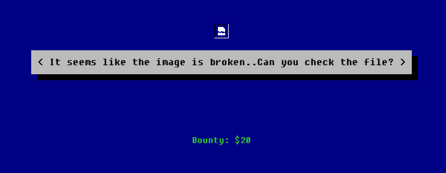
Huh, a broken image? Let’s have a closer look at it, most web browsers have a tool for inspecting the content of web pages… In Firefox, you can right click on the broken image icon and choose Inspect Element. You should be automagically transported to the following code:
<div class="lvlone">
<img src="img/leveltwo.jpeg" /> <br /> <br />
<p>
<button class="btn btn-large btn-primary" type="button">
It seems like the image is broken..Can you check the file?
</button>
</p>
The source of the image is img/leveltwo.jpeg, which is a relative path. To have the full path, just prepend the URL to it: http://ctf.infosecinstitute.com/img/leveltwo.jpeg.
{kind=link}
If we try to consult that URL, we get an error message:
The image “http://ctf.infosecinstitute.com/img/leveltwo.jpeg” cannot be displayed because it contains errors.
Alrighty, let’s download that image and see if we can fix it somehow. wget is a command line tool to retrieve stuff from the internetz.
$ wget http://ctf.infosecinstitute.com/img/leveltwo.jpeg
And, another Linux utility, file can help us verity that this file is a real image.
$ file leveltwo.jpeg
leveltwo.jpeg: ASCII text
Oops, someone has been lying on their file type!
$ cat leveltwo.jpeg
aW5mb3NlY19mbGFnaXNfd2VhcmVqdXN0c3RhcnRpbmc=
The content is encoded using base64, which can be decoded with the -d option:
$ cat leveltwo.jpeg | base64 -d
infosec_flagis_wearejuststarting
Flag: infosec_flagis_wearejuststarting
Level 03
I think that progress bar is a decoy… Let’s start with that QR code instead huhu. We can use a website to decode it online, like https://zxing.org/w/decode.jspx. The result is a bunch of dashes, dots and spaces. That should ring a bell as being morse code :D
.. -. ..-. --- ... . -.-. ..-. .-.. .- --. .. ... -- --- .-. ... .. -. --.
Using https://morsecode.world/international/translator.html to decode it online:
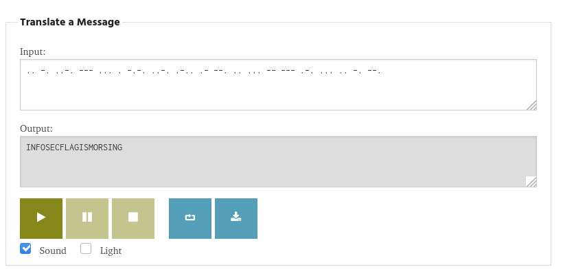
Flag: infosec_flagis_morsing
Level 04
Huh, a popup Stop poking me keeps showing as soon as we hover on the picture on the webpage.
Let’s have a look at the source code then:
<div class="hero-unit lvlfour">
<img src="img/thumb.jpg" onmouseover="poke()" /> <br /> <br />
<p>
HTTP means Hypertext Transfer Protocol
</p>
</div>
And if we follow the poke() function in custom.js:
function poke() {
alert("Stop poking me!");
}
function learn() {
alert("You just got trolled");
}
So yeah, nothing to see here…
Let’s follow the hint, I mean, it’s a cookie monster, and check the HTTP request and its cookies. The web developers tools in browsers usually some kind of network analysis thinggy. In Firefox, open the developers tools and go to the Network tab. Then reload the page so you can examine what’s happening.
Huh, there’s a suspicious cookie around there:
fusrodah: vasbfrp_syntvf_jrybirpbbxvrf
And that cookie value has a format very similar to the flags… Huh. The letters look like they have been shifted in the alphabet, let’s try a caesar cipher decoder, like https://www.xarg.org/tools/caesar-cipher/
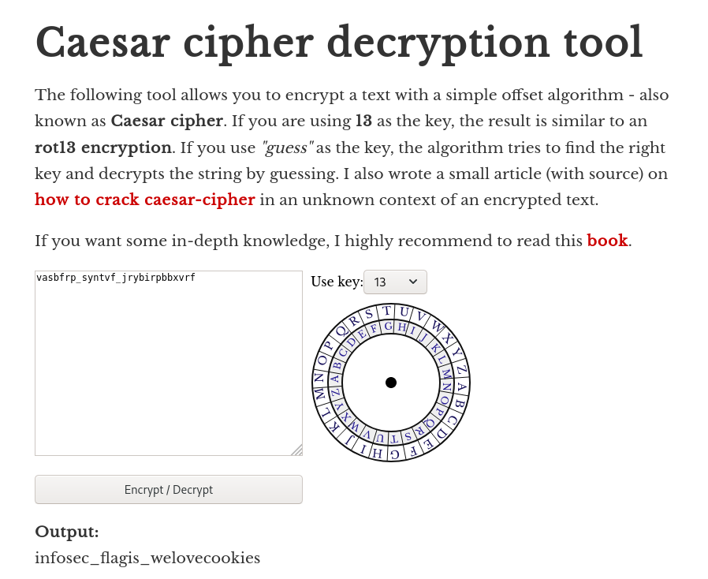
Flag: infosec_flagis_welovecookies
Level 05
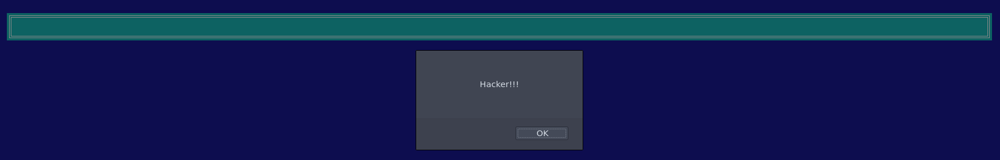
How rude! Since the website is just spawning pop-ups in a infinite loop, let’s just retrieve the source code of the page:
$ wget http://ctf.infosecinstitute.com/levelfive.php
Yup, as I said, just plain rude:
<script>
for(;;){
alert('Hacker!!!');
}
</script>
<img src="img/aliens.jpg" /> <br /> <br />
What about that aliens.jpg though?
Huh. Okay. Let’s try… steghide on it maybe?
$ steghide extract -sf aliens.jpg
Enter passphrase: <enter>
wrote extracted data to "all.txt".
$ cat all.txt
01101001011011100110011001101111011100110110010101100011010111110110011001101100011000010110011101101001011100110101111101110011011101000110010101100111011000010110110001101001011001010110111001110011
Flag in binary now huh? Let’s convert it back to hooman-readable with a Python shell:
>>> import binascii
>>> n = int("01101001011011100110011001101111011100110110010101100011010111110110011001101100011000010110011101101001011100110101111101110011011101000110010101100111011000010110110001101001011001010110111001110011", 2)
>>> binascii.unhexlify("{:x}".format(n))
b'infosec_flagis_stegaliens
Flag: infosec_flagis_stegaliens
Level 06
I don’t trust the files anymore :D
$ file sharkfin.pcap
sharkfin.pcap: pcap capture file, microsecond ts (little-endian) - version 2.4 (Ethernet, capture length 65535)
pcap files is format for network capture packets and can be opened with Wireshark ~~
Lots of encrypted data there… Let’s have a look at who’s talking to who!
In the top menu of Wireshark, go to Statistics > Conversations:
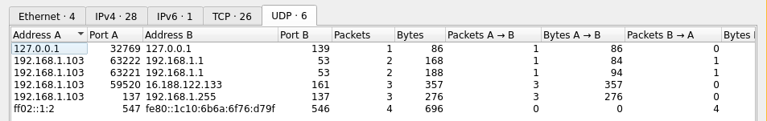
There’s a total of 26 TCP conversations and 6 UDP conversations. But, there’s only one amongst all these that exchanged one packet. Right click on the first line of the UDP and select apply as filter > selected > A-B. The wireshark filter is now set to:
ip.addr==127.0.0.1 && udp.port==32769 && ip.addr==127.0.0.1 && udp.port==139
Now, select that packet and choose follow UDP stream:
696e666f7365635f666c616769735f736e6966666564
Which could be a flag encoded in hexadecimal, let’s verify it with the Python shell:
>>> import binascii
>>> binascii.unhexlify("696e666f7365635f666c616769735f736e6966666564")
b'infosec_flagis_sniffed'
Flag: infosec_flagis_sniffed
Level 07
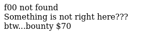
Let’s try various URLs:
http://ctf.infosecinstitute.com/f00.php // Not Found
And following the scheme from the previous pages:
http://ctf.infosecinstitute.com/levelseven.php // Blank page
Strangely enough, it returns an empty page, but not a page not found or anything else.
Hum, let’s examine the network request…
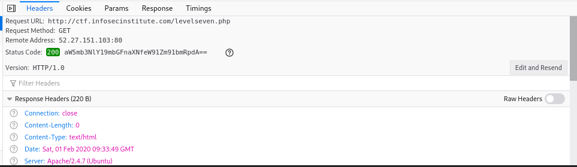
That’s an interesting status code right there…
aW5mb3NlY19mbGFnaXNfeW91Zm91bmRpdA==
Another base64 encoded flag!
$ echo "aW5mb3NlY19mbGFnaXNfeW91Zm91bmRpdA==" | base64 -d
infosec_flagis_youfoundit
Flag: infosec_flagis_youfoundit
Level 08
Huh, an app! Let’s have a look at the strings first…
$ strings app.exe | grep infosec
infosec_flagis_0x1a
# Welcome to infosec institute net app v1.0#
Flag: infosec_flagis_0x1a
Level 09
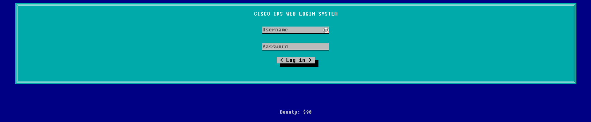
Cisco IDS Web Login huh? Let’s try to see if we can find some defaults credentials lying around:
cisco/cisco
Cisco/Cisco
admin/admin
localadmin/secur4u
root/secur4u
operator/operator
I finally stumbled upon the right ones in https://cirt.net/passwords?vendor=Cisco
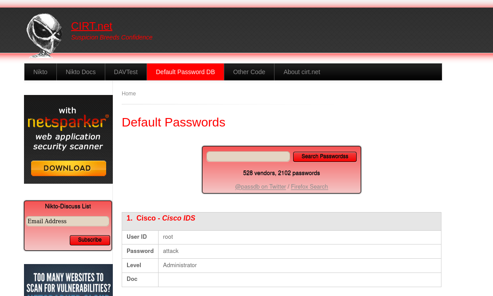
Entering the credentials root / attack show a pop-up with the flag:
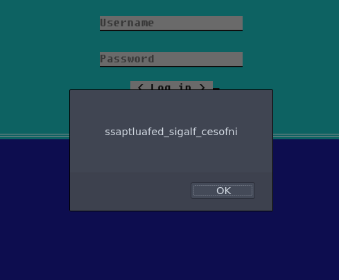
$ echo "ssaptluafed_sigalf_cesofni" | rev
infosec_flagis_defaultpass
Flag: infosec_flagis_defaultpass
Level 10
$ file Flag.wav
Flag.wav: RIFF (little-endian) data, WAVE audio, Microsoft PCM, 16 bit, mono 44100 Hz
That sounds like a squeeky mice!
Anyway, let’s try to slow it down, open the file in Audacity and modify the playback speed with the slider next to the tiny green play button:
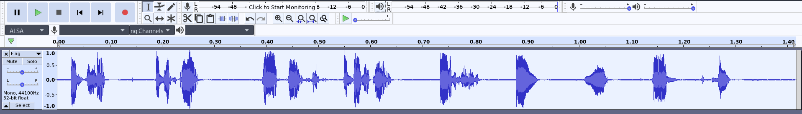
With a playback speed of 12%, you can hear the words: infosec underscore flagis underscore s o u n d.
Flag: infosec_flagis_sound
Level 11
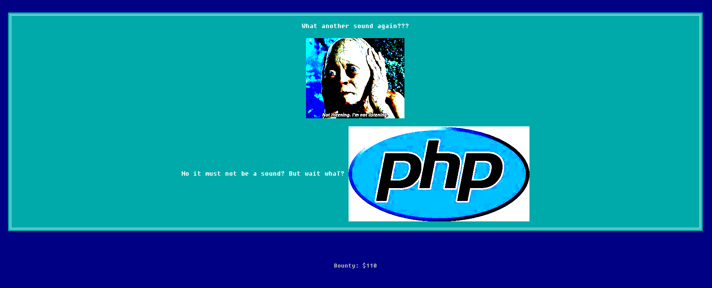
Okay, let’s start by retrieving that PHP image:
$ wget http://ctf.infosecinstitute.com/img/php-logo-virus.jpg
$ file php-logo-virus.jpg
php-logo-virus.jpg: JPEG image data, JFIF standard 1.01, resolution (DPI), density 96x96, segment length 16, Exif Standard: [TIFF image data, big-endian, direntries=6, name=infosec_flagis_aHR0cDovL3d3dy5yb2xsZXJza2kuY28udWsvaW1hZ2VzYi9wb3dlcnNsaWRlX2xvZ29fbGFyZ2UuZ2lm], baseline, precision 8, 450x237, components 3
Look, a flag in the name field of the EXIF metadata:
$ echo "aHR0cDovL3d3dy5yb2xsZXJza2kuY28udWsvaW1hZ2VzYi9wb3dlcnNsaWRlX2xvZ29fbGFyZ2UuZ2lm" | base64 -d
http://www.rollerski.co.uk/imagesb/powerslide_logo_large.gif
Eh. I’m very confused. What is that rollerski.co.uk link…?
Flag: infosec_flagis_powerslide???
Level 12
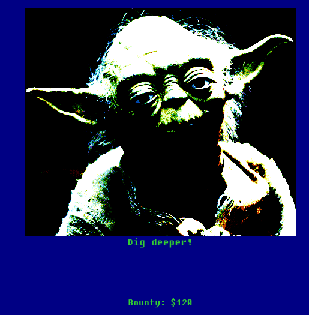
Lol. Don’t go dig deeper in the picture people. It’s. not. there. I didn’t find that one, and after throwing everything at that yoda.png and being none the wiser, I checked the other write-ups for a hint.
There’s actually an additional CSS file in the source code of this page. A CSS file. WHO CHECKS FOR THAT?!
<link href="css/bootstrap.css" rel="stylesheet">
<link href="css/custom.css" rel="stylesheet">
<link href="css/design.css" rel="stylesheet">
</head>
Content of design.css:
.thisloveis{
color: #696e666f7365635f666c616769735f686579696d6e6f7461636f6c6f72;
}
That’s kind of a very long color isn’t it? Let’s decode it with some Python:
$ python -c 'import binascii;print(binascii.unhexlify("696e666f7365635f666c616769735f686579696d6e6f7461636f6c6f72"))'
b'infosec_flagis_heyimnotacolor'
Flag: infosec_flagis_heyimnotacolor
Level 13
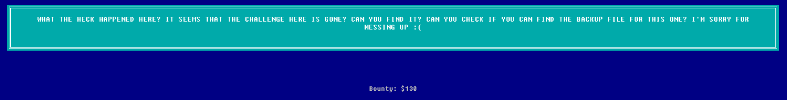
Okay, let’s try some backup path then:
- http://ctf.infosecinstitute.com/levelthirteen.php.bak
- http://ctf.infosecinstitute.com/levelthirteen.php~
- http://ctf.infosecinstitute.com/levelthirteen.php.old » bingo
<?php
/* <img src="img/clippy1.jpg" class="imahe" /> <br /> <br />
<p>Do you want to download this mysterious file?</p>
<a href="misc/imadecoy">
<button class="btn">Yes</button>
</a>
<a href="index.php">
<button class="btn">No</button>
</a>
*/
?>
Okay, let’s retrieve this so called decoy…
$ wget http://ctf.infosecinstitute.com/misc/imadecoy
$ file imadecoy
imadecoy: pcap capture file, microsecond ts (little-endian) - version 2.4 (Linux cooked v1, capture length 65535)
Huh, pcap files are back, let’s take Wireshark out ~~
The traffic seems to have lots of HTTP requests, let’s have a look at the HTTP objects we can extract: File > Export Objects > HTTP. Hit Save All in the new windows to easily browse them. The flag is in HoneyPY.PNG:
Flag: infosec_flagis_morepackets
Level 14
Clippy is back~~ What mysterious thing does he have for us now?
$ file level14
level14: ASCII text, with very long lines
a phpMyAdmin SQL Dump apparently… Here are the bits I targeted first:
--
-- Dumping data for table `administrator`
--
INSERT INTO `administrator` (`username`, `password`) VALUES
('admin', 'password'),
('celso', 'celso!@#');
--
-- Dumping data for table `flag?`
--
INSERT INTO `flag?` (`ID`, `user_login`, `user_pass`, `user_nicename`, `user_email`, `user_url`, `user_registered`, `user_activation_key`, `user_status`, `display_name`) VALUES
(1, 'admin', '$P$B8p.TUJAbjULMWrNXm8GsH4fb2PWfF.', 'admin', 'christyhaigcreations@gmail.com', '', '2012-09-06 20:09:55', '', 0, 'admin');
But… it went nowhere. Because the flag is actually in the friends table…
--
-- Dumping data for table `friends`
--
INSERT INTO `friends` (`id`, `name`, `address`, `status`) VALUES
(102, 'Sasha Grey', 'Vatican City', 'Active'),
(101, 'Andres Bonifacio', 'Tondo, Manila', 'Active'),
(103, 'lol', 'what the???', 'Inactive'),
(104, '\\u0069\\u006e\\u0066\\u006f\\u0073\\u0065\\u0063\\u005f\\u0066\\u006c\\u0061\\u0067\\u0069\\u0073\\u005f\\u0077\\u0068\\u0061\\u0074\\u0073\\u006f\\u0072\\u0063\\u0065\\u0072\\u0079\\u0069\\u0073\\u0074\\u0068\\u0069\\u0073', 'annoying', '0x0a');
Convert it back to ASCII with the printf from bash:
$ printf \\u0069\\u006e\\u0066\\u006f\\u0073\\u0065\\u0063\\u005f\\u0066\\u006c\\u0061\\u0067\\u0069\\u0073\\u005f\\u0077\\u0068\\u0061\\u0074\\u0073\\u006f\\u0072\\u0063\\u0065\\u0072\\u0079\\u0069\\u0073\\u0074\\u0068\\u0069\\u0073
infosec_flagis_whatsorceryisthis
Flag: infosec_flagis_whatsorceryisthis
Level 15
ARE YOU READY FOR THE EXCITEMENT OF THE LAST CHALLENGE?
Well, don’t be.
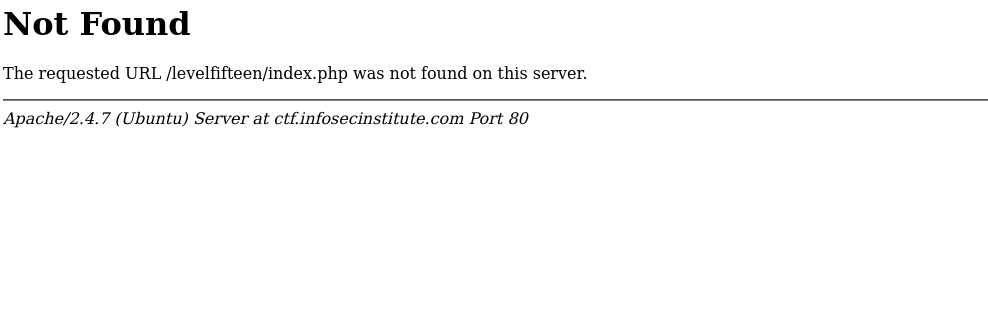
huh, maybe finding the page was part of the challenge? After trying a couple of URLs, I turned to the all-mighty Google. And. Some interesting informations turned up :‘D
NOTE: This challenge was taken down shortly after the conclusion of the CTF due to vulnerabilities in the web server. You can read about the challenge and solution below, but you won’t be able to perform it. This write-up will be longer than most as a result.
I know, I know, disappointment, you can check another write-up on it though https://rtheory.net/n00bs%20ctf/level-15/.
Conclusion
That’s it folks~~ Mixed feelings about this one, the flag format is not specified, there’s no interface to validate the flags, no categories for the challenges. Surprise stego is never appreciated. At least with a category tag, you can avoid it.
I didn’t learned anything new, so yeah, it was too easy for me. But at the same time, I feel a beginner would be lost by the cheap tricks to encode the flags or the surprise steganography. It lacks real “hacking” for me, there was no reverse engineering, exploitation or cryptography challenges.
If you’re truly starting in CTFs, I recommend you check picoCTF as the progression is much more easier and coherent, and they have challenges covering more areas of the usual CTFs.